The OSRIC rule set allows you to add homebrew choices to most of its selections: armor, weapons, races, and so on. The entry dialog for each type of choice includes fields for all the information particular to that type. For most choices, the values to enter into the dialog can be determined by comparing them to similar choices from the core rules.
The input fields used to enter homebrew choices are similar to those used by the Quilvyn editor—text fields, selection menus, checkboxes, etc. One difference between the two is that you can enter multiple values into most text boxes in the homebrew choices editor. For example, when entering a homebrew race, you will likely want to enter multiple values in the Languages text box. To do this, separate the individual values by commas: Common,Goblin,Hobgoblin. If you ever need to enter a single value that contains a comma into a text box, enclose the value in quotes: "May create and mend magic weapons, armor, and shields".
Although the widest text boxes that Quilvyn uses show around 40 characters, you can enter longer text values. Only 40 characters will show at once, but you can use your arrow keys to move the cursor within the full text. Several examples below show only the beginning portion of longer values entered into text boxes.
Armors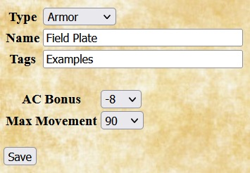 |
For homebrew armors, Quilvyn displays fields for entering the improvement to armor class gained by using the armor, the maximum movement allowed when wearing it, and its weight in pounds. The example shown gives the values for field plate, as discussed in the equipment section of the OSRIC rules. It adds -8 to the wearer's armor class and limits movement to 90'. |
Classes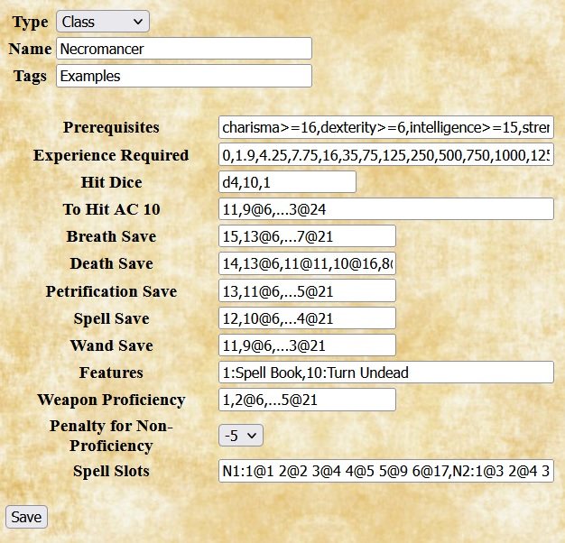 |
When adding a homebrew class, Quilvyn displays fields that allow you to specify optional class prerequisites, the experience points required to advance to each level, class hit dice, THAC10 and save progressions, class features, weapon proficiency progression, the penalty for using a non-proficient weapon, and any spell slots gained by the class. The Hit Dice entry is a list of three items that indicate the number of sides on the dice, the maximum number of dice, and the number of points added to a character's hit points each level after the maximum number of dice is reached. For example, the Hit Dice entry for the cleric class is d8, 9, 2—indicating that a cleric character gains d8 hit points each level through level 9, after which a fixed 2 hit points are added each level. Several of the entries—experience required, THAC10, saves, weapon proficiency, and spell slots—represent columns from tables in the OSRIC rules. Each of these entries contains a set of items listing a class level and the value of the attribute for the class at that level. For example, the Weapon Proficiency entry for the Assassin class might read "3@1 4@5 5@9 6@13", indicating that the class grants proficiency in 3 weapons at level 1, 4 weapons at level 5, 5 weapons at level 9, and 6 weapons at level 13. (The first item in all progressions is assumed to apply to level 1 in the class, so including the "@1" is optional.) If the progression is regular, like the +1 increment to the proficient weapon count every 4 levels in this example, intermediate values can be replaced by "...", so the Assassin class Weapon Proficiency can equivalently be shown as "3 4@5 ... 6@13". As another example, consider the THAC10 value for the cleric class—10 at level 1, then reducing by 2 every three levels through level 18, then dropping to -1 for all higher levels. Spelled out, this progression would be "10 8@4 6@7 4@10 2@13 0@16 -1@19". However, since the progression is regular through level 18, this sequence can be shortened to "10 8@4 ... -1@19". The example shows entries for a Necromancer class that has similar features to the core Illusionist class. Instead of the high dexterity score required by the Illusionist class, this Necromancer class requires a high charisma score, and it gains the ability to turn undead as a cleric at level 10. |
Features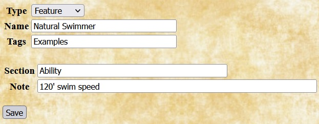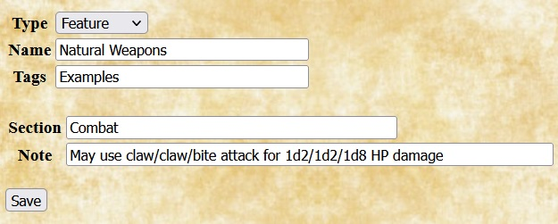 |
In Quilvyn, features describe the effects of class and racial features. When adding a homebrew feature, enter the section of the character sheet (one of Ability, Combat, Feature, Magic, or Save) where the note for the feature should appear, then enter the note text. You can enter multiple sections and notes, but the number of sections entered must equal the number of notes. Feature notes can both reference and modify character attributes; see the discussion of using character attributes for how to do this. The example shows the entries for two features of the Lizard Man race outlined below. |
Languages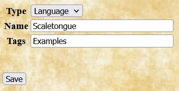 |
Adding a homebrew language requires only specifying the name. Once added, languages can be added to a character by selecting from the language list and can be included in the list of languages automatically known by homebrew races. The example shows the entries for a language called Scaletongue. |
Races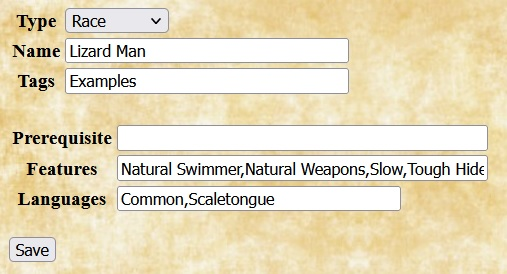 |
When adding a homebrew race, Quilvyn displays fields that allow you to enter prerequisites, features, and languages for the race. Each racial feature listed will require adding a feature to describe its effects. The Languages field lists the languages that characters of this race know automatically. The example shows an entry that allows players to create characters with the Lizard Man race from the Monsters section of the OSRIC rules. Features for this race are Natural Swimmer, Natural Weapons, Slow, Tough Hide, and Lizard Man Ability Adjustment. The corresponding feature entries for the first two of these are shown above. |
Shields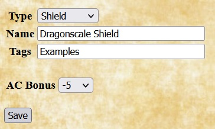 |
For homebrew shields, Quilvyn displays fields that allow you to enter the shield's effect on armor class and its weight. The example shows the entry for a shield made from the scales of a dragon. |
Spells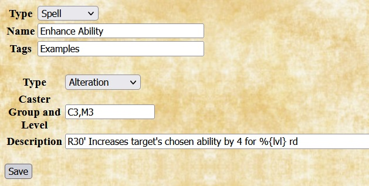 |
When adding a homebrew spell, Quilvyn displays fields that allow you to enter the spell's type, the list of classes and levels for the spell, and the description of the spell. Spell descriptions can embed references to character attributes; see the discussion of using character attributes for how to include these. The example shows the entry for the alteration spell Enhance Ability, which is a level 3 spell for clerics and magic users. The description notes that the spell can be cast over a short range and lasts for a number of rounds equal to the caster level. |
Weapons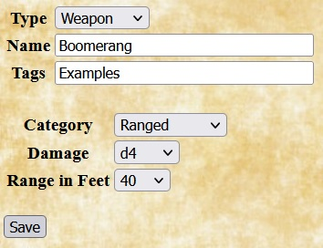 |
When adding a homebrew weapon, Quilvyn displays fields that allow you to enter the weapon's category (Unarmed, Light, One-Handed, Two-Handed, or Ranged), damage, and (for ranged weapons) range increment. The example shows the entry for a boomerang, a weapon with a 40' range that inflicts d4 damage. |
There are three places that you might want to use references to character attributes when adding homebrew choices: prerequisites for homebrew classes and races; in feature notes that modify character attributes; and embedded in feature notes and spell descriptions. Attribute references appear somewhat differently in each of these contexts. To illustrate each use, we'll expand the definition of the Lizard Man homebrew race shown above.
In the OSRIC rules, each of the non-human races has minimum ability score requirements for player characters: dwarfs must have a strength of at least 8 and a constitution of 12 or more; elves require a minimum dexterity of 7 and a score of at least 8 in constitution, intelligence, and charisma; and so on. We can give the Lizard Man homebrew race a similar requirement—for example, a minimum dexterity of 7 and constitution of 10—by adding text to the race's Prerequisite field:
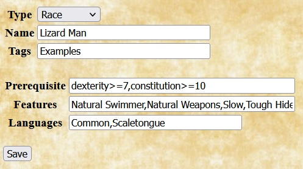Given this definition, Quilvyn will generate tests for these requirements and will show a validation error if a Lizard Man character has a dexterity score of less than 7 or a constitution score of less than 10.
Within prerequisites, Quilvyn recognizes the common comparison operators (<, <=, >, >=, ==, !=), and you can use the OR operator (||) to require that at least one of a set of prerequisites is satisfied:
intelligence >= 15 || wisdom >= 15
When making a comparison to a text value rather than a number, surround the value with single or double quotes. Quilvyn also supports the matching operators =~ (matches) and !~ (does not match) with strings. The first of these two prerequisites requires that the character have a Lawful Good alignment, while the second allows any good alignment:
alignment == 'Lawful Good'
alignment =~ 'Good'
(You can think of the =~ and !~ operators as "contains" and "does not contain", but they actually perform a pattern match, treating their second operand as a regular expression. This means that certain characters, such as * and ?, have special meanings if they appear in the second operand. The Mozilla project provides a web page with a detailed description of regular expressions.)
With the Lizard Man homebrew race definition complete, the next step is to create corresponding homebrew features for the Lizard Man racial features—Natural Swimmer, Natural Weapons, Slow, Tough Hide, and Lizard Man Ability Adjustment. Quilvyn defines the Slow feature for us, since some of the core races (e.g., Halfling) also have it, so we can use it without defining a homebrew feature. The definitions for the Natural Swimmer and Natural Weapons features are shown above. That leaves the Tough Hide and Lizard Man Ability Adjustment features to be defined here.
The OSRIC rules specify that a Lizard Man has a tough and leather hide that gives it an armor class of 5—5 better than an unarmored human. The Tough Hide feature will note this improvement and adjust the displayed armor class appropriately. Since the feature affects the character's armor class, we'll place the feature note in the combat section of the character sheet:

Given this definition, Quilvyn will automatically generate a rule that adds -5 to the character's armor class value, and the note will appear in italics on the character sheet. For readability, character attributes in feature notes must appear as shown above, with initial capital letters and spaces between words.
Single features can modify multiple attributes; in these cases, the note should list the individual modifications separated by slashes. For example, if Lizard Man characters automatically gain 2 in constitution and strength, but subtract 2 from their intelligence, the definition of the Lizard Man Ability Adjustment feature might look like this:
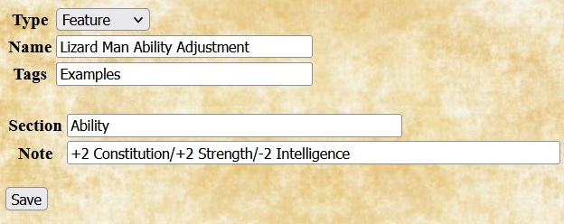Given this definition, Quilvyn will automatically generate rules to adjust the character's ability scores. This note will also appear in italics, showing that Quilvyn has made the adjustments.
As a convenience, notes in the save and skill sections can modify saving throw values and skill modifiers by referencing the save type or skill name directly; the saves. and skillModifiers. prefixes are not necessary. For example, features with the following two notes will automatically subtract one from the character's required saving throws vs. wands and add 5 and 10 to the character's chance of success when climbing walls and hiding in shadows:
-1 Wands+5 Climb Walls/+10 Hide In Shadows
Nearly all spells, as well as some class and race features, have effects that vary based on character attributes. For example: rangers gain a damage bonus against evil humanoids and giants equal to their level; dwarfs gain a +1 bonus to saves vs. poison for each 3.5 points of constitution; and the Airy Water spell last a number of turns equal to the caster's level.
You can embed references to character attributes in the text of feature notes and spell descriptions by enclosing them within the characters %{}. Using this ability, the note for the ranger's Damage Bonus feature looks like this:
+%{levels.Ranger} melee damage vs. evil humanoids and giantish foes
When Quilvyn displays this note on the character sheet, it first replaces the reference to the character's levels.Ranger attribute with its value, so the note might appear on the sheet as
+6 melee damage vs. evil humanoids and giantish foes
Beyond simple references, Quilvyn supports performing calculations within embedded references. The note for the Assassination feature of the assassin class looks like this:
%{levels.Assassin*5+50}% - 5%/2 foe levels chance that a strike kills a surprised target
Within embedded references, Quilvyn supports the common comparison operators (<, <=, >, >=, ==, !=), the common arithmetic operators (+, -, *, /, unary -), AND (&&), OR (||), matching (=~, !~), and integer division (//). It also supports the ternary if-then-else operator (?:) and the operators <? and >?, which return the smaller and larger of their two operands, respectively. Using these operators, we can define the note for the assassin Bonus Languages feature as follows, taking into account that the number of languages depends both upon the assassin's level and their intelligence:
May learn %{levels.Assassin-8<?4<?intelligence-14} additional choices from alignment languages, druidic, or thieves\' cant
Within spell descriptions, in addition to common character attributes, Quilvyn makes available the special character attribute lvl. This variable refers to the caster level appropriate to the specific spell: casterLevels.C for the C1 spell Bless, casterLevels.D for the D4 spell Call Woodland Beings, casterLevels.I for the I2 spell Deafness, and so on. Using the lvl attribute allows you to incorporate the caster level into a spell description that works for multiple classes. The description of the Enhance Ability spell example from adding a spell reads:
R30' Increases target's chosen ability by 4 for %{lvl} rd
When showing this description on the character sheet, Quilvyn will replace the reference to lvl with the character's cleric or magic user level, as appropriate. For example, the description for the M3 Enhance Skill spell for a level 7 magic user will read:
R30' Increases target's chosen ability by 4 for 7 rd
| Basic attributes | Identity | Combat | Magic | Skills and features |
|---|---|---|---|---|
|
|
|
|
|